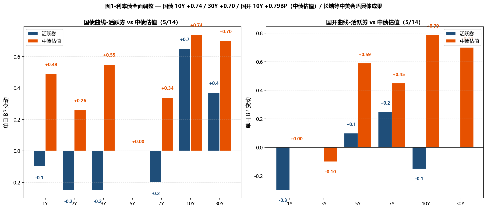
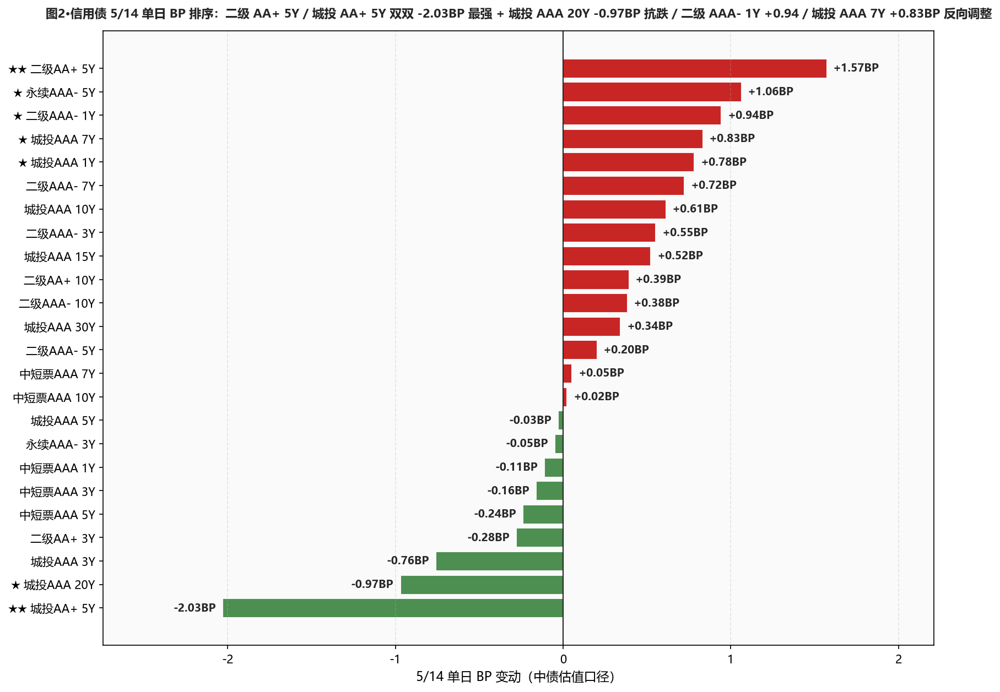
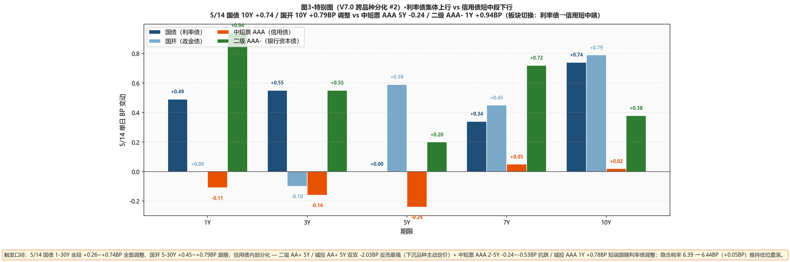

市场定性 利率债全面调整 + 等待中美元首会晤具体成果 + 信用债内部分化（下沉品种 AA+ 5Y 反向 -2.03BP 异动）—— 国债曲线 1-30Y 全段上行 — 1Y +0.49 / 5Y -0.00 / 7Y +0.34 / 10Y +0.74 / 15Y +0.54 / 20Y +0.35 / 30Y +0.70BP—— 长端调整 +0.70~+0.74BP 等中美会晤具体成果； 国开债 5-30Y 跟随上行 — 5Y +0.59 / 7Y +0.45 / 10Y +0.79 / 30Y +0.70BP（10Y 国开 +0.79BP 略超国债 10Y +0.74BP）； 10Y 隐含税率 6.39 → 6.44BP（+0.05BP）微幅回升、近 30 日低位震荡； 信用债内部分化：★★ 二级 AA+ 5Y -1.57BP / 城投 AA+ 5Y -2.03BP（双双信用债 5/14 单日最强、下沉品种主动定价）/ 城投 AAA 20Y -0.97BP / 中短票 AAA 2Y -0.53BP / 城投 AAA 3Y -0.76BP / 二级 AA+ 3Y -0.28BP； 但信用债 1Y/7Y/10Y 反向调整：二级 AAA- 1Y +0.94BP / 城投 AAA 7Y +0.83BP / 城投 AAA 10Y +0.61BP / 城投 AAA 1Y +0.78BP / 二级 AAA- 7Y +0.72BP（信用债跟随利率债长端调整）；永续 AAA- 5Y +1.06BP 反向（高收益板块尾盘修正）。 资金面继续宽松平稳：DR001 -0.19BP 至 1.2651%（PDF "微幅下行 1.26% 附近"、距 OMO -13.49BP）/ DR007 +0.79BP 至 1.3021%（距 OMO -9.79BP）/ DR007-DR001 点差 3.70BP（PDF: 不到 4bp、明显偏小）。
- ⚠️ 30Y 国债建仓浮亏扩至 +2.20BP、等中美会晤后再定加仓本行 4/29 建仓 30Y 国债 3pct（中债 2.2190%）；5/13 浮亏 +1.50BP → 5/14 中债 2.2410% / 浮亏扩至 +2.20BP；活跃券 2.2370% 距 2.23% 上方 0.70BP；5/13 "若中债估值跌破可加仓" 信号未触发（5/14 中债估值反向 +0.74BP）；维持现仓不补不止、等中美会晤具体成果 + 5/15 MLF 续做规模
- ✅ 二级 AAA- 7-10Y 持仓兑现、5/14 浮盈微缩 +0.38~+0.72BP本行 5/12 加仓 7Y/10Y 2-3pct 已于 5/13 大幅命中（双双 -2.14BP）；5/14 反向 +0.38~+0.72BP 浮盈微缩；持仓不动、5/14 调整是利率债联动调整、二级板块基本面未变
- ✅ 城投 AA+ 5Y / 二级 AA+ 5Y 下沉品种异动捕捉5/14 城投 AA+ 5Y / 二级 AA+ 5Y 双双 -2.03BP 异动（信用债最强）—— 同期高等级板块基本持平或调整；下沉品种主动定价、可考虑下周新增 1-2pct 仓位试探（限定 AA+ 5Y）；后续观察是否延续
- ⚠️ 城投 AAA 7Y/10Y/30Y 反向上行 — 跟随利率债长端调整5/14 城投 AAA 7Y +0.83 / 10Y +0.61 / 30Y +0.34BP 全面跟随上行；30Y 城投独立抗跌信号本日未出现；保持现仓不新增；关注 5/15 30Y 是否恢复抗跌
- ✅ 杠杆 105-108% 维持R-DR007 4.57BP（接近 5BP 温和分层下限、央行未压非银加杠杆）/ R-DR001 2.46BP；资金面平稳、维持杠杆不变；交易员提示"DR001 维持 1.26% 相对高位、与 DR007 差距不到 4bp 明显偏小、需要观察后续二者利差变化"
- ① 30Y国债 vs 2.23% ⚠️ 仍上方贴近：活跃券 2.2370%（上方 0.70BP）/ 中债估值 2.2410%（上方 1.10BP）→阻力位反复整理已第 4 日、等中美会晤具体成果催化
- ② 10Y国债 vs 1.75% ⚠️ 重回上方：活跃券 1.7470%（下方 0.30BP）/ 中债估值 1.7588%（上方 0.88BP）→活跃券仍小幅低于阈值、但中债估值已升至上方 0.88BP
- ③ R-DR007 利差 >15BP ○ 未触发：温和分层：当前 4.57BP→维持 105-108% 杠杆
- ④ 10Y中短票AAA-3Y 利差 ≤25BP ○ 未触发：当前 47.51BP（+0.18BP）、距阈值 22.51BP→10Y 持平 / 3Y -0.16BP、3Y 跑赢、利差走阔
- ⑤ 30Y-10Y 城投AAA 利差 ≤25BP ○ 未触发：当前 30.10BP（-0.27BP）、距阈值 5.10BP→30Y +0.34 vs 10Y +0.61BP 利差略收窄
A 段·详细数据
① 资金面 Wind EDB API + Wind 综述 PDF
资金面继续宽松平稳——DR001 加权 -0.19BP 至 1.2651%（PDF "微幅下行徘徊于 1.26% 附近"、距 OMO -13.49BP）；DR007 +0.79BP 至 1.3021%（距 OMO -9.79BP）；DR007-DR001 点差 3.70BP（PDF: "明显偏小、需观察后续二者利差变化"）；非银资金成本：R001 +0.24BP 至 1.2897% / R007 +0.33BP 至 1.3478%；R-DR007 4.57BP（接近 5BP 温和分层下限）/ R-DR001 2.46BP；NCD AAA 1Y 持平 1.4350% / 3M -0.50BP 至 1.3500%。央行 5/14 开展 5 亿元 7 天逆回购 / 270 亿到期 / 单日净回笼 265 亿元。交易员评论："中美元首会晤、市场等待会谈的具体成果明朗；十分充裕的流动性主导了近期债市走势、尽管央行还在缩减中长期流动性投放、但依然会顾及政策的连续性和稳定性、资金宽松程度难以骤然逆转"；机构表示"结合央行防范资金空转及非银过度加杠杆等表述、未来隔夜资金利率料逐步回归政策中枢"。
| 指标 | 5/13 | 5/14 | BP |
|---|---|---|---|
| DR001 (%) | 1.2670 | 1.2651 | -0.19BP |
| DR007 (%) | 1.2942 | 1.3021 | +0.79BP |
| R001 (%) | 1.2873 | 1.2897 | +0.24BP |
| R007 (%) | 1.3445 | 1.3478 | +0.33BP |
| NCD AAA 1Y (%) | 1.4350 | 1.4350 | +0.00BP |
| NCD AAA 3M (%) | 1.3550 | 1.3500 | -0.50BP |
② 利率债 — 中债估值 中债估值 xlsx
呈现"国债曲线全段上行 + 国开 5-30Y 跟随调整 + 短端微跌"格局：国债曲线 1-30Y 全段上行 — 1Y +0.49 / 3Y +0.55 / 5Y 持平 / 7Y +0.34 / 10Y +0.74 / 15Y +0.54 / 20Y +0.35 / 30Y +0.70BP；国开债 5-30Y 跟随调整 — 5Y +0.59 / 7Y +0.45 / 10Y +0.79 / 30Y +0.70BP（仅国开 1Y/3Y 持平 / -0.10BP 抗跌）；10Y 隐含税率 6.39 → 6.44BP（+0.05BP、近 30 日低位维持）；30Y-10Y 国债期限利差 48.26 → 48.22BP（-0.04BP，基本持平、长端同步调整）。
| 品种 | 5/13 (%) | 5/14 (%) | BP |
|---|---|---|---|
| 国债 1Y | 1.2057 | 1.2106 | +0.49BP |
| 国债 2Y | 1.2717 | 1.2743 | +0.26BP |
| 国债 3Y | 1.2897 | 1.2952 | +0.55BP |
| 国债 5Y | 1.4736 | 1.4736 | +0.00BP |
| 国债 7Y | 1.6270 | 1.6304 | +0.34BP |
| 国债 10Y | 1.7514 | 1.7588 | +0.74BP |
| 国债 15Y | 2.0710 | 2.0764 | +0.54BP |
| 国债 20Y | 2.2500 | 2.2535 | +0.35BP |
| 国债 30Y | 2.2340 | 2.2410 | +0.70BP |
| 国开 1Y | 1.3663 | 1.3663 | +0.00BP |
| 国开 3Y | 1.5079 | 1.5069 | -0.10BP |
| 国开 5Y | 1.6054 | 1.6113 | +0.59BP |
| 国开 7Y | 1.7589 | 1.7634 | +0.45BP |
| 国开 10Y | 1.8153 | 1.8232 | +0.79BP |
| 国开 30Y | 2.3650 | 2.3720 | +0.70BP |
③ 利率债 — 活跃券 DM 查债通 + Wind 综述
活跃券呈现"长端 +0.65~+0.75BP 调整 + 短端 1Y/2Y/3Y -0.10~-0.30BP 抗跌 + 国开短端反向下行"格局：30Y 国债 "26超长特别国债02" PDF +0.67BP 报 2.2400%（DM 综合 +0.37BP 报 2.2370%、距 2.23% 上方 0.70BP）/ 10Y 国债 "26附息国债05" +0.75BP 报 1.7480%（DM 综合 +0.65BP 报 1.7470%、距 1.75% 下方 0.30BP）/ 10Y 国开 "25国开20" +0.15BP 报 1.8285%（DM 综合 -0.15BP 报 1.8255%）；短端反向：国债 1Y -0.10 / 2Y -0.25 / 3Y -0.25BP / 国开 1Y -0.30BP。国债期货分化收盘 — 30Y 主连 -0.15% 报 112.790 / 10Y -0.02% 报 108.795 / 5Y 持平 106.330 / 2Y 持平 102.582。一级市场：国开行 1Y/5Y/10Y 中标 1.2858%/1.5381%/1.7817%、全场 12.77/4.49/4.66、边际倍数 10.63/2.21/3.67（短端 1Y 边际 10.63 惊人）；财政部 63D/7Y/10Y 加权 0.9146%/1.5862%/1.72%、全场 3.68/2.88/3.9、边际倍数 4.22/9.65/4（7Y 边际 9.65 强劲、显示一级仍在抢中期国债）；进出口行 1Y/5.5Y 中标 1.2886%/1.5533%、全场 5.16/6.13、边际 3.74/1.02。
| 品种 | 5/14 收盘 (%) | BP |
|---|---|---|
| 国债 1Y | 1.2000 | -0.10BP |
| 国债 3Y | 1.3900 | -0.25BP |
| 国债 5Y | 1.4670 | +0.00BP |
| 国债 7Y | 1.6150 | -0.20BP |
| 国债 10Y (26附息国债05 PDF +0.75 报 1.7480) | 1.7470 | +0.65BP |
| 国债 30Y (26超长特别国债02 PDF +0.67 报 2.2400) | 2.2370 | +0.37BP |
| 国开 5Y | 1.5660 | +0.10BP |
| 国开 7Y | 1.7125 | +0.25BP |
| 国开 10Y (25国开20 PDF +0.15 报 1.8285) | 1.8255 | -0.15BP |
| 国开 30Y | 2.0850 | +0.00BP |
④ 信用债 — 中债估值 中债估值 xlsx
呈现"下沉 AA+ 5Y 异动 + 中短票 AAA 2-5Y 抗跌 + 城投/二级 7-10Y 跟随调整"分化： ★★ 二级 AA+ 5Y -1.57BP / 城投 AA+ 5Y -2.03BP（双双信用债 5/14 单日最强、下沉品种主动定价）； ★ 城投 AAA 20Y -0.97BP / 3Y -0.76BP / 5Y -0.03BP / 城投 AA+ 3Y -0.76BP / 二级 AA+ 3Y -0.28BP—— 下沉品种 + 城投短端 + 长端 20Y 抗跌； 中短票 AAA 1Y -0.11 / 2Y -0.53 / 3Y -0.16 / 5Y -0.24BP 中短端微幅下行； ★ 信用债 1Y/7Y/10Y 跟随利率债长端调整 — 二级 AAA- 1Y +0.94 / 7Y +0.72 / 10Y +0.38BP / 城投 AAA 1Y +0.78 / 7Y +0.83 / 10Y +0.61 / 15Y +0.52 / 30Y +0.34BP； 永续 AAA- 5Y +1.06BP 反向 / 3Y -0.05BP 持平； 配置盘信号：5/13 信用债全面大涨 → 5/14 板块切换至下沉 AA+ 5Y / 中短票 AAA 2-5Y / 城投 AAA 20Y 等"抗跌品种"集中。
| 品种 | 5/13 (%) | 5/14 (%) | BP |
|---|---|---|---|
| 中短票AAA 1Y | 1.4974 | 1.4963 | -0.11BP |
| 中短票AAA 2Y | 1.6426 | 1.6373 | -0.53BP |
| 中短票AAA 3Y | 1.7029 | 1.7013 | -0.16BP |
| 中短票AAA 5Y | 1.8649 | 1.8625 | -0.24BP |
| 中短票AAA 7Y | 2.0434 | 2.0439 | +0.05BP |
| 中短票AAA 10Y | 2.1762 | 2.1764 | +0.02BP |
| ★ 城投AAA 1Y | 1.5001 | 1.5079 | +0.78BP |
| 城投AAA 3Y | 1.7222 | 1.7146 | -0.76BP |
| 城投AAA 5Y | 1.8517 | 1.8514 | -0.03BP |
| ★ 城投AAA 7Y | 2.0367 | 2.0450 | +0.83BP |
| ★ 城投AAA 10Y | 2.2228 | 2.2289 | +0.61BP |
| 城投AAA 15Y | 2.3311 | 2.3363 | +0.52BP |
| ★ 城投AAA 20Y | 2.4800 | 2.4703 | -0.97BP |
| 城投AAA 30Y | 2.5265 | 2.5299 | +0.34BP |
| ★ 二级AAA- 1Y | 1.5027 | 1.5121 | +0.94BP |
| 二级AAA- 3Y | 1.7512 | 1.7567 | +0.55BP |
| 二级AAA- 5Y | 1.9446 | 1.9466 | +0.20BP |
| 二级AAA- 7Y | 2.1271 | 2.1343 | +0.72BP |
| 二级AAA- 10Y | 2.2451 | 2.2489 | +0.38BP |
| 二级AA+ 3Y | 1.7679 | 1.7651 | -0.28BP |
| ★★ 二级AA+ 5Y | 1.9604 | 1.9761 | +1.57BP |
| 二级AA+ 10Y | 2.2574 | 2.2613 | +0.39BP |
| 永续AAA- 3Y | 1.7736 | 1.7731 | -0.05BP |
| 永续AAA- 5Y | 1.9555 | 1.9661 | +1.06BP |
| ★★ 城投AA+ 5Y | 1.9282 | 1.9079 | -2.03BP |
B 段·今日关键事件
① 中美元首会晤、市场等待具体成果 — 长端 +0.70BP 调整：交易员评"中美元首会晤、市场等待会谈的具体成果明朗；十分充裕的流动性主导了近期债市走势、尽管央行还在缩减中长期流动性投放、但依然会顾及政策的连续性和稳定性、资金宽松程度难以骤然逆转"；30Y 国债"26超长特别国债02"+0.67BP 报 2.2400% / 10Y 国债 +0.75BP 报 1.7480% / 10Y 国开 +0.15BP 报 1.8285%。
② 央行 5/14 5亿元 7天逆回购 + 单日净回笼 265 亿元 — DR001 与 DR007 点差不足 4bp：央行 5/14 公开市场以固定利率 数量招标方式开展 5亿元 7天逆回购、单日净回笼 265 亿元；DR001 维持在 1.26% 相对高位、与 DR007 差距不到 4bp、明显偏小、需观察后续二者利差变化；同时也要注意央行如何续做本月第二次买断式逆回购、以判断其态度。
③ 一级市场极活跃 — 国开 1Y 边际倍数 10.63 / 财政部 7Y 边际 9.65 双双惊人：国开行 1Y/5Y/10Y 中标 1.2858%/1.5381%/1.7817%、全场倍数 12.77/4.49/4.66、边际倍数 10.63/2.21/3.67（1Y 边际 10.63 显示短端被疯抢）；财政部 63D/7Y/10Y 加权 0.9146%/1.5862%/1.72%、全场 3.68/2.88/3.9、边际倍数 4.22/9.65/4（7Y 边际 9.65 强劲、一级仍在抢中期国债）。
④ A 股大跌 — 上证 -1.52% / 创业板 -2.16% / 科创 50 -2.55%：上证 -1.52% 报 4177.92 失守 4200 / 创业板 -2.16% 失守 4000 / 北证 50 -3.73% / 科创 50 -2.55% / 万得全 A -2.03%；A 股全天成交 3.39 万亿（昨日 3.26 万亿）；商业航天概念股领跌、电池/铜箔产业链跌幅居前、能源金属概念股表现不佳、特高压概念股深度回调；环氧丙烷概念股逆势走高、光伏产业链局部活跃、CPO 概念股局部涨势、共进股份一字涨停。
⑤ 华泰固收 — 42 家上市银行年报+一季报披露完毕、银行配债需求仍偏强：42 家 A 股上市银行 2025 年报与 2026 一季报披露完毕。营收强劲修复、息差企稳为核心驱动；金融投资扩张提速、负债成本下行；账面平稳、前瞻指标边际走弱。从财报数据观察及对债券市场的启示来看、息差企稳减少了对货币政策宽松的制约；表内"资产荒"延续、银行配债需求仍偏强；银行整体不缺负债、但结构可能存在变化。
⑥ 中金固收（地产债）— 4月央国企地产债信用利差继续修复 + 头部主体修复较大："4月央国企地产债信用利差继续修复、头部主体利差修复幅度较大、部分较弱主体利差仍在高位；后续总体信用利差或继续修复、头部主体有望修复至本轮利差扩开水平、中等资质主体利差跟随修复、建议以中短久期配置为主；尾部主体利差修复相对较难、不过 1 年左右品种可适度下沉挖掘收益"。
C 段·重点可视化（V7.0 固定2张+动态1张）

图1·利率债全面调整 — 国债 10Y +0.74 / 30Y +0.70 / 国开 10Y +0.79BP（中债估值）/ 长端等中美会晤具体成果

图2·信用债 5/14 单日 BP 排序：二级 AA+ 5Y / 城投 AA+ 5Y 双双 -2.03BP 最强 + 城投 AAA 20Y -0.97BP 抗跌 / 二级 AAA- 1Y +0.94 / 城投 AAA 7Y +0.83BP 反向调整

图3·特别图（V7.0 跨品种分化 #2）·利率债集体上行 vs 信用债短中段下行（板块切换）